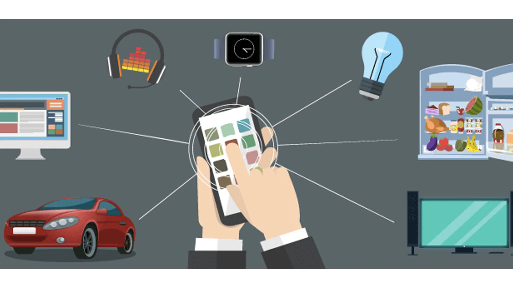
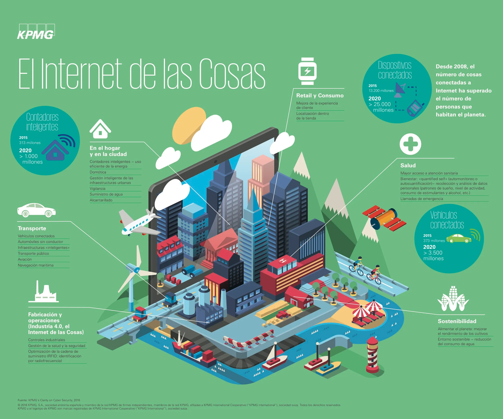

Características del Internet de las Cosas (IoT)
- Conectividad: Los dispositivos deben estar conectados a la red, utilizando tecnologías como Wi-Fi, Ethernet o Bluetooth.
- Sensibilidad: Utilizan sensores para detectar y medir parámetros como movimiento, temperatura, humedad, etc.
- Interacción: Los dispositivos pueden interactuar con los usuarios y otros dispositivos a través de interfaces y sistemas de comunicación.
- Automatización: Permiten automatizar tareas y procesos, mejorando la eficiencia y reduciendo el esfuerzo humano.
- Seguridad: Es crucial proteger los datos transmitidos y recibidos para garantizar la privacidad y la integridad.

Ventajas del Internet de las Cosas (IoT)
- Capacidad de conectarse a la red: La principal ventaja del IoT es la capacidad de conectarse a Internet, lo que permite obtener acceso a múltiples servicios. Ejemplo: una televisión conectada para acceder a contenidos.
- Intercambio de información en tiempo real: El IoT permite el intercambio rápido de información, útil en aplicaciones como la seguridad, donde se puede alertar a servicios de emergencia automáticamente.
- Ahorro energético: El IoT facilita el monitoreo y automatización de procesos, lo que reduce el consumo energético. Un ejemplo es la automatización de sistemas de climatización.
- Procesos más sostenibles: Al optimizar el uso de recursos, el IoT promueve la sostenibilidad. Un ejemplo claro es la climatización controlada por dispositivos IoT.
- Comunicación con el entorno directo: El IoT permite la interacción directa con el entorno cercano, como abrir y cerrar puertas desde un teléfono móvil o recibir información basada en la geolocalización.
Desventajas del Internet de las Cosas (IoT)
- La información no se encuentra cifrada: Una desventaja del IoT es que los datos pueden no estar cifrados, lo que aumenta el riesgo de que sean accesibles por terceros, creando vulnerabilidades de seguridad.
- Requiere de una inversión previa en tecnología: Para que el IoT funcione, es necesaria una inversión inicial en dispositivos con la tecnología adecuada para conectarse a Internet.
- Reducción de la intimidad: El uso del IoT puede reducir la privacidad al exponer espacios privados al público, como en el caso de cámaras de vigilancia no utilizadas correctamente.
- Brecha tecnológica: El IoT amplía la brecha digital, afectando a quienes no tienen acceso a esta tecnología, especialmente en zonas rurales o países con acceso limitado a Internet.
- Falta de compatibilidad: Una de las principales desventajas es la falta de estandarización, lo que puede causar problemas de compatibilidad entre dispositivos IoT de diferentes fabricantes.
Las ventajas y desventajas del IoT son variadas e importantes. Aunque nos ofrece grandes posibilidades y beneficios, también presenta desafíos y riesgos que deben ser abordados para maximizar su uso mientras minimizamos sus posibles inconvenientes.
